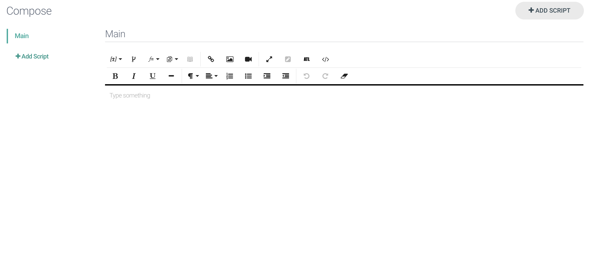
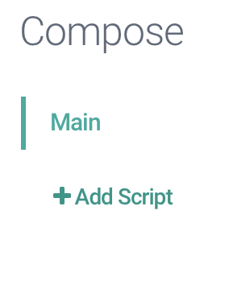
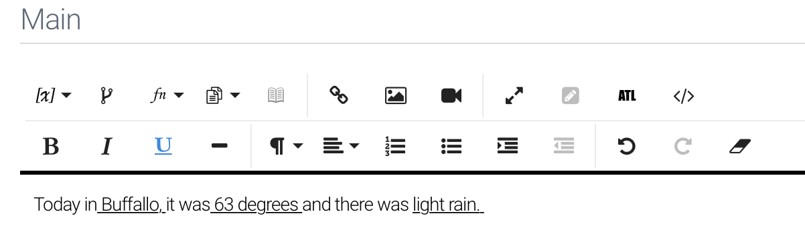
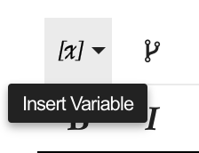
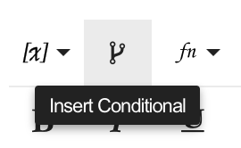
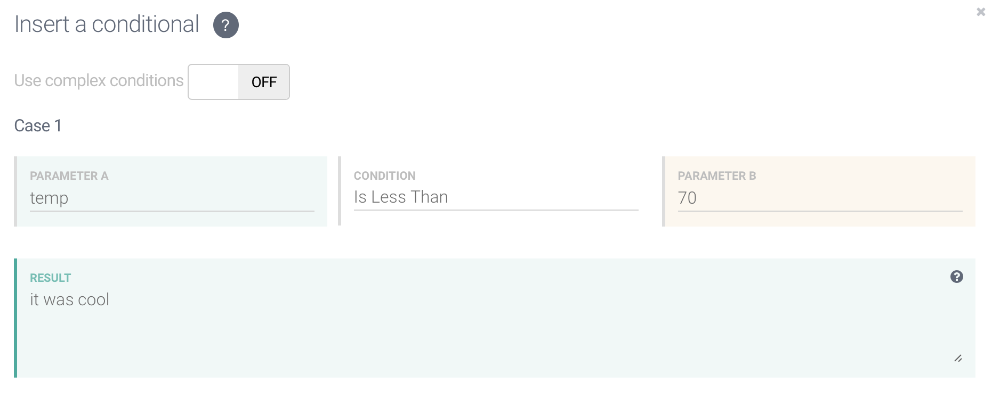
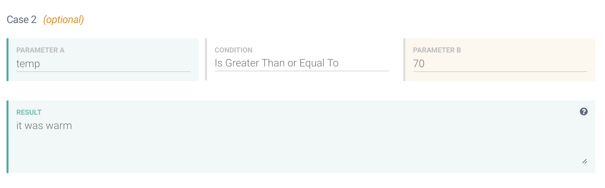
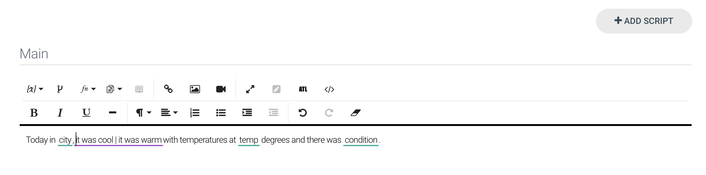
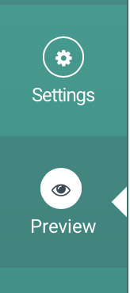
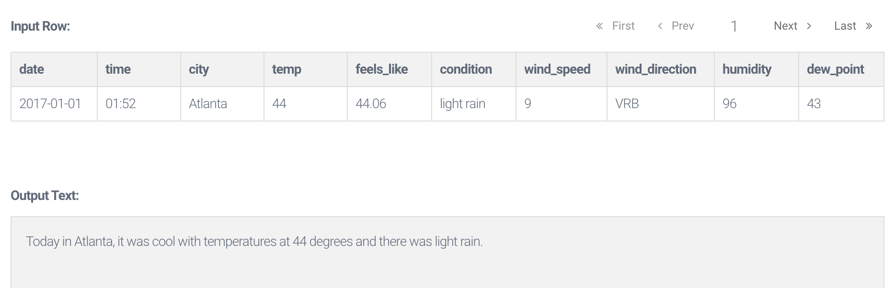

Everything we will be doing is located in the “Compose” tab that is located on the left hand side of your screen, so make sure you don’t stray from that tab during this part of the lesson.
You will be taken to a screen that looks like a basic version of a blank Microsoft Word document. This screen is where you will compose your template.
It is important to note that this is your “Main” script. You can locate your different “Scripts” underneath the title “Compose” on the inner left-hand side of your screen. Make sure that you are working within the correct script when writing your template. For this example, we will always be in the “Main” script for a basic template.

Do not be intimidated when writing your template. The easiest way to write your template is by taking a row of data from your spreadsheet and writing a simple story using that row’s data. For example:
In
After you type out a sentence using the data, identify your variables (your variables are located across the top of your spreadsheet and will change depending on the data).
In my example, the bold portions are my variables.
In Columbia , there is snow and the temperature is 70 degrees.
From there, I am able to insert my variables, which will be pre-loaded from your data set under the button labeled [x].
After replacing your data with the corresponding variables, your sentence should look something like this:
In
But wait a minute, what if what I am writing will change depending on the data I use? What if I want to say it is cool or warm but can’t since the data changes per story? Don’t worry, that is next.
Remember if/then (or “conditional”) statements? Here is where they will come in handy. For the sake of consistency, I will be referring to if/then statements as conditionals since that is how it is labeled in Arria.
We will use a conditional statement when the wording we use to describe something depends on a value in the data.
From our previous example, we have our variables in place.
In
If we want to make describe the weather by adding an adjective then it would depend on the temperature for that city.
Today in
In order to make the adjective a conditional, we are going to click the conditional button in the toolbar that looks somewhat similar to the Greek letter, psi.
In this instance, we want our sentence to say that the temperature is warm when it is greater than or equal to 60 degrees and to say the temperature is cool if it is less than or equal to 59 degrees.
Start with Parameter A. If you click “Parameter A” you will be given a choice of your variables from your data set. For this example we are working with the temperature, so we will select temp.
Moving to the right, click Condition. You will be given a choice to trigger a certain word. According to what we want, if the city has a temperature greater than or equal to 60 we want the story to say it is “warm”. Select “greater than or equal to” for Condition.
Next, select Parameter B. Here, we are able to type whatever we want or select another variable. Again, we want the temperature to be greater than or equal to 60, so we will type in “60” in Parameter B.
Underneath that line, you will see a Result box, which is what the story will display depending on the data. For this example, we want the story to include that it is “warm.”
On the other hand, we need another line that explained when to say it is cold. Move to the line below that is labeled “Case 2” and input the necessary variables and numbers to display “cool” when the temperature is under 59 degrees.
Case 2:
In Parameter A we are still dealing with temperature which corresponds with the variable temp. The condition is what we consider cool to be. In this instance it is less than or equal to 59 degrees. Parameter B is the number that corresponds with the temperature, which is 59.
 ------We have completed our conditional! Scroll to the bottom of the box and click “Build”. You will see the conditional will show up as “warm | cool”. If the conditional is not where you want it to be in your template, you can copy and paste the conditional and place it where you would like.
Now our sentence looks like this:
Today in
To preview what one of your stories will look like, head over the left side of your screen and click the lower “Preview" tab.
If you hit “Next” in the upper righthand corner of the screen, you will be able to scroll through the different stories that will be produced from your data set.
